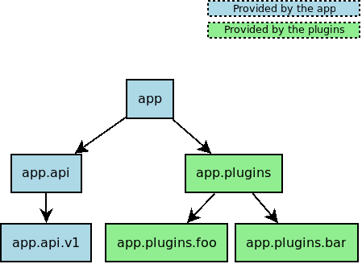

How to Design and Implement a Plugin Architecture in Python
We tend to think that plugin-based architectures are hard to develop. And that is certainly true for many advanced plugin-based architectures such as those for browsers. But sometimes we may be looking for a simple yet powerful plugin-based architecture. If that’s your case, then read on. I’ll show you how to design and implement one in Python.
I’ll explain how I designed utt’s plugin system and how you can apply the same pattern to your application.
A simple plugin system in Python
There are two key questions to address in a plugin architecture:
- Plugin discovery: how does the application discover and load plugins?
- Application API: how do the plugins interact with the application?
In our simple plugin system, these two problems are solved by putting packages
into specific namespaces. Plugins go into the app.plugins namespace and the
API under app.api, where app is the name of the application.
At startup, the application discovers and loads plugins by asking Python all
packages registered under the app.plugins namespace. So all packages whose
names match app.plugins.*. And when plugins are loaded by the application,
they import the application API at app.api.
For example, if there were two plugins for the application installed on the
system, foo and bar, they would be located in the app.plugins.foo and
app.plugins.bar namespaces.
This package naming convention allows the application and the plugins to know about each other, even though they are not necessary maintained and distributed by the same person. For example, the application could be maintained in its own git repo and distributed under its own package on PyPI, while each plugin can be maintained in their own git repo and distributed in their own package on PyPI.
We can say that the application and the plugins form together a virtual package
(e.g. app), composed of many physical packages (e.g. app.api,
app.plugins.foo and app.plugins.bar).
Here is an example of a namespace hierarchy that follows the package naming convention we’ve just described and who is responsible for providing each package:

utt
Let’s now see how utt implements such plugin system.
The main package in utt is utt. So as expected, utt’s plugins are located
under the utt.plugins namespace and utt’s API under utt.api.
Plugin discovery
Here is how utt discovers and loads plugins at startup:
import importlib
import pkgutil
import sys
import utt.plugins
def iter_namespace(ns_pkg):
return pkgutil.iter_modules(ns_pkg.__path__, ns_pkg.__name__ + ".")
def load_plugins():
for _, name, _ in iter_namespace(utt.plugins):
importlib.import_module(name)
def main():
load_plugins()
...
The iter_namespace function finds all packages under the ns_pkg namespace
(i.e. utt.plugins) and the load_plugins function imports them.
Source: https://github.com/larose/utt/blob/master/utt/main.py
Application’s API
utt exposes its API (currently at v1) under the
utt.api namespace:
# This file contains the classes, functions and constants
# that can be used by plugins.
from ...command import Command
from ._private import register_command, register_component
...
Source: https://github.com/larose/utt/blob/master/utt/api/_v1/__init__.py
The symbols exported in the file above are the ones that can be used by plugins.
For example, the following plugin registers a new utt command (foo) through the
register_command function exported in utt’s API:
from utt.api import v1
class FooHandler:
...
foo_command = v1.Command(name="foo", handler_class=FooHandler, ...)
v1.register_command(foo_command)
Conclusion
That’s basically all you need to know to develop your own plugin architecture in Python.
Note that plugins can also be maintained and distributed within the same git repo and PyPI package of the application. This is what utt does for its built-in commands: they are just plugins.
Finally, a technique very useful when developing a plugin architecture is dependency injection. Dependency injection allows to easily override certain behaviors at runtime, depending on the configuration loaded (think plugins). utt heavily uses this pattern with the help of cargo, a dependency injection library in Python.